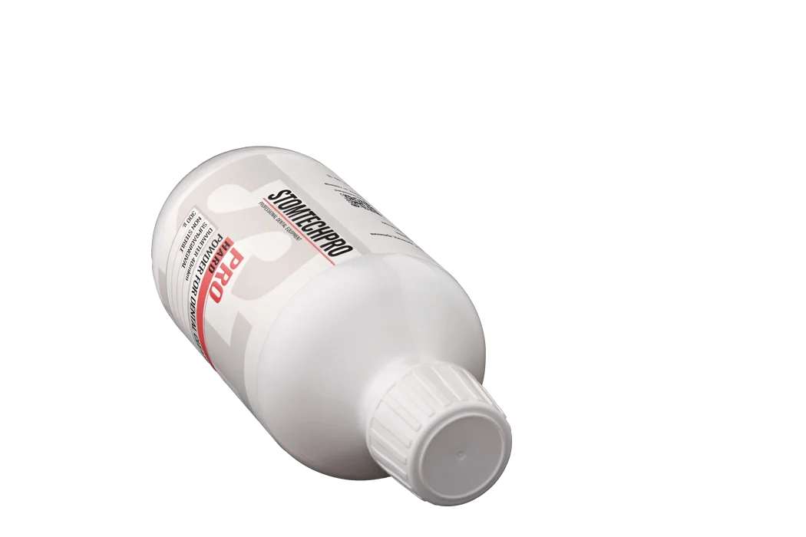
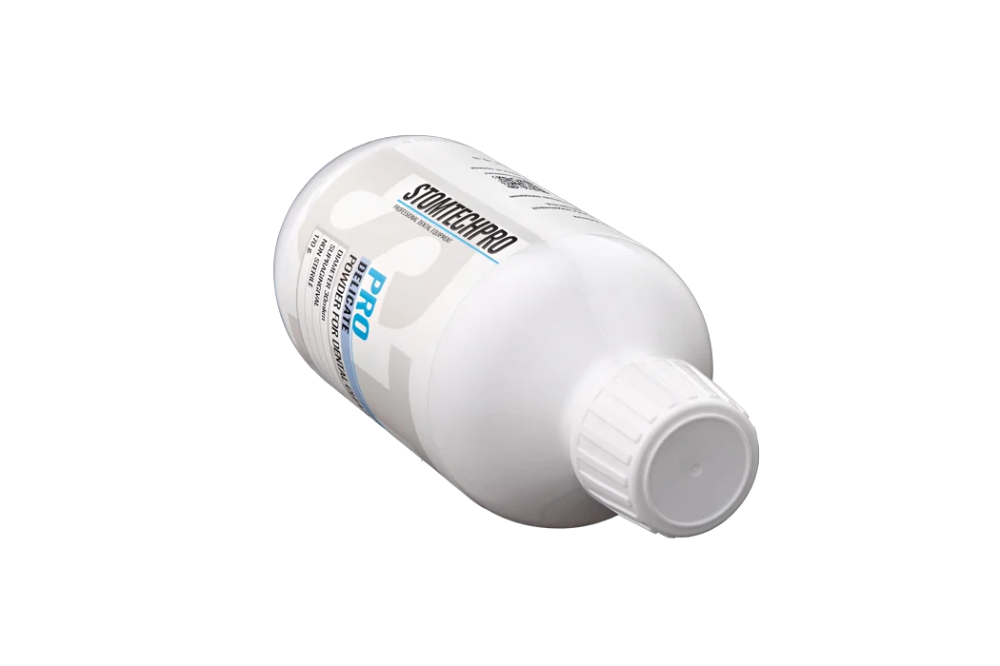

Порошки STOMTECH PRO работают на любом наконечнике для воздушно-абразивной обработки — не нужно покупать отдельный аппарат, чтобы дать пациенту комфортную процедуру.


NSK, EMS, KaVo, Woodpecker и другие — без покупки отдельного аппарата
Округлые частицы эритритола бережны к эмали и краю десны
14, 30 и 40 мкм — от профилактики до плотного пигментированного налёта
Проверенная совместимость с наконечниками
От бережной профилактики до плотного налёта курильщика. Каждый порошок совместим со стандартными пескоструйными наконечниками.
Самая мягкая фракция. Для профилактики, детского приёма и пациентов с повышенной чувствительностью.
Мягко снимает налёт и биоплёнку без дополнительной полировки. Рабочая лошадка ежедневного приёма.
Справляется с налётом курильщика и труднодоступными зонами, включая пришеечную область.
Без контрактных заводов и китайского сырья «под переклейку». Форму и размер частиц контролируем сами — от сырья до фасовки. Партия стабильна от флакона к флакону.
Округлые частицы полируют поверхность, а не скалывают её. Меньше дискомфорта у пациента, аккуратнее работа у края десны. Сода — только в версии HARD, там, где она уместна.
Не нужно покупать аппарат за сотни тысяч, чтобы начать. Работает на том, что уже стоит в кабинете.
Сопоставимая деликатность без переплаты за импортный бренд, валюту и цепочку посредников.
Регистрационное удостоверение на медизделие, резидент «Сколково», поддержка Фонда содействия инновациям.
Гигиена — процедура повторяющаяся. Комфорт на кресле напрямую влияет на то, придёт ли человек через полгода и приведёт ли семью. Это самая недооценённая статья дохода клиники.
Гигиенисты ищут порошок под свой аппарат: «для NSK», «для EMS», «для KaVo». STOMTECH PRO подходит для всех стандартных систем воздушно-абразивной обработки — переходить на другой расходник при смене оборудования не придётся.

Профессиональная чистка — одна из немногих процедур, на которую пациент возвращается регулярно, без боли и без страха. Стоимость расходника в её себестоимости невелика, а влияние на впечатление — решающее.

Форма на сайте, Telegram или звонок. Уточняем, какие наконечники стоят в кабинете.
Отправляем комплект из трёх порошков в клинику. Бесплатно и без обязательств.
Гигиенист оценивает расход, деликатность и реакцию пациента на своём оборудовании.
Отгружаем с производства. По РФ и ближнему зарубежью, документы — комплектом.
Отправим комплект ULTRA, DELICATE и HARD в вашу клинику. Оцените расход, деликатность и комфорт пациента на своём оборудовании.
Что входит в процедуру, из каких этапов состоит, чем отличается от «просто чистки» и почему домашняя щётка не заменяет визит к гигиенисту.
Метод воздушно-абразивной обработки: как устроен, что чувствует пациент, чем отличается от ультразвука и в каких случаях применяется.
Чем отличаются основы порошков по абразивности, форме частиц и задачам. Когда мягкая фракция обязательна, а когда сода работает быстрее.